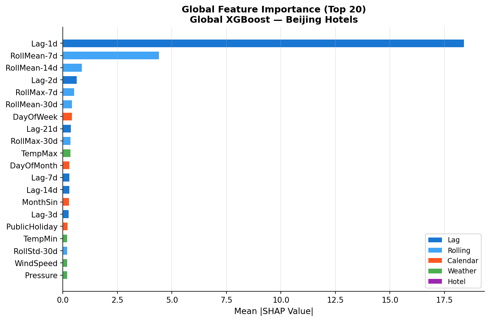
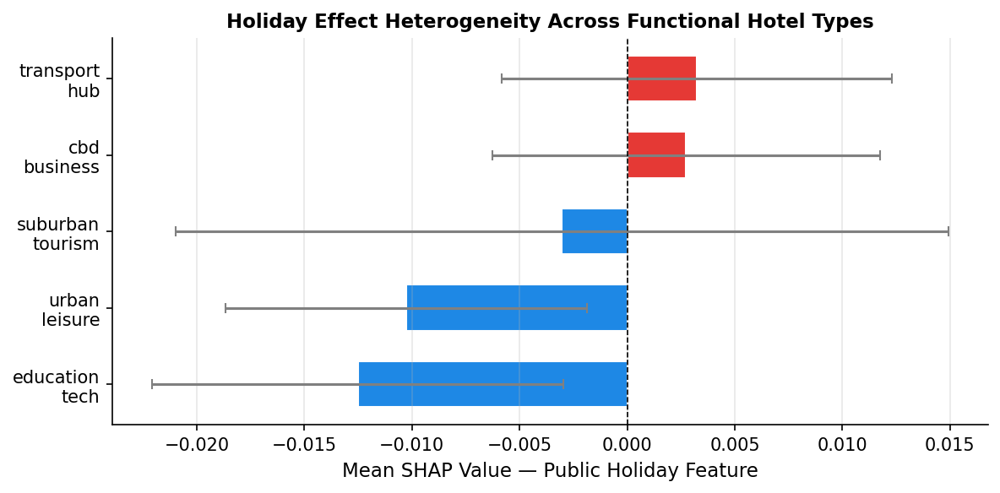
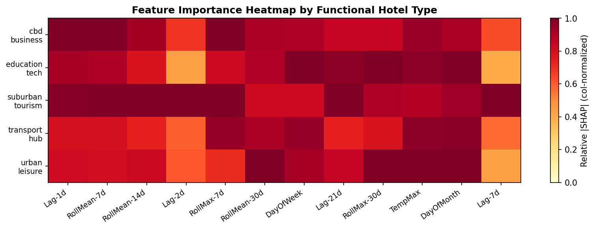

This page summarizes feature importance, holiday heterogeneity, and functional type heatmap of our hotel occupancy prediction system.
本页面总结酒店入住率预测系统的特征重要性、节假日异质性分析和功能类型热力图。

Lag-1d and 7-day rolling mean dominate; weather and calendar features moderate; long lags less but useful.
Lag-1天和7天滚动平均最重要，天气和日历特征影响中等，长期滞后特征贡献较小但仍有用。

Holiday effect varies across hotel types: positive for transport hubs and CBD business hotels, slightly negative for suburban tourism, urban leisure, and education/tech.
节假日效应在不同酒店类型间差异明显：对交通枢纽和CBD商务酒店为正向影响，对郊区旅游酒店、城市休闲酒店和教育/科技酒店为轻微负向影响。

Shows feature importance across hotel types; identifies consistent vs type-specific features; guides targeted improvements.
显示不同酒店功能类型特征重要性；区分全局重要和类型特定特征；指导模型优化方向。
| Model | MAE | RMSE | sMAPE |
|---|---|---|---|
| xgb_full | 4.32 | 5.87 | 14.99 |
| xgb_w/o_lag | 5.27 | 7.22 | 17.46 |
| xgb_w/o_rolling | 4.37 | 5.92 | 15.45 |
| perhotel_xgb | 5.83 | 7.73 | 17.89 |
| arima | 9.37 | 11.33 | 25.83 |
Ablation study highlights the importance of lag and rolling features. Removing lag increases MAE from 4.32 to 5.27, while omitting rolling averages moderately worsens performance. Per-hotel XGBoost models underperform the global model, and ARIMA performs the worst overall.
消融实验凸显了滞后和滚动特征的重要性。去掉滞后特征会使MAE从4.32增加到了5.27，而去掉滚动平均特征会造成适度性能下降。每酒店XGBoost模型表现不如全局模型，ARIMA整体最差。